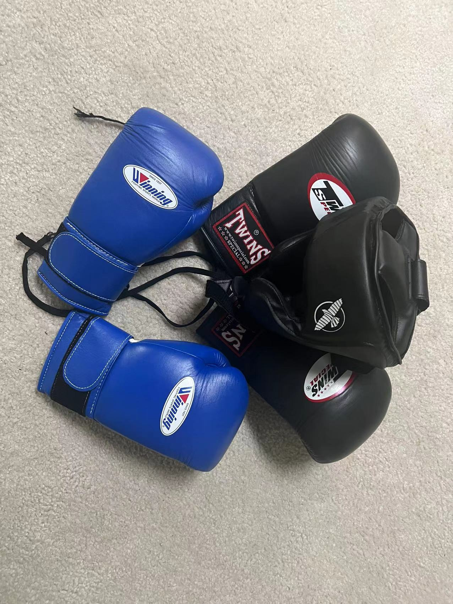
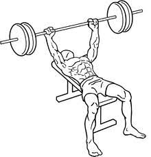
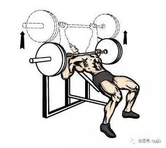
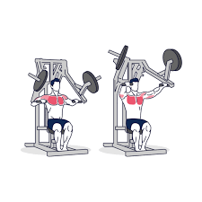
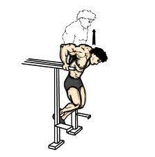
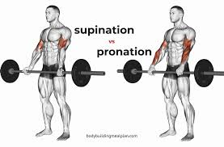
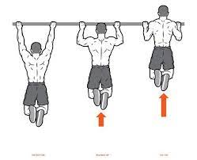
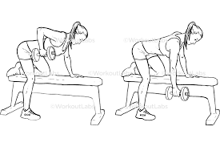
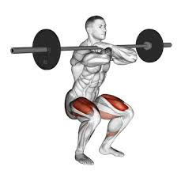
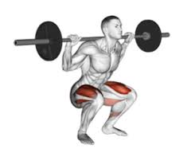

My name is Kaiyan Cao, and I am a master student in School of Information, Umich.
I earned my bachelor degree of Electrical and Computer Engineering in Shanghai Jiao Tong University.
I am interested in arts and sports. I started to learn sketch in a small age. I am a daily visiter to the gym. My favourite sport is soccer, and in the past year, I became a fan in boxing.
Chest Work Out




Bench Press 185lb 5*5reps
Incline Bench Press 135lb 4*12reps
Machine Chest Press 80lb 4*12reps
Dip Self Weight 4*12reps
Back Work Out



Barber Deadlift 265lb 5*5reps
Pull-up Self Weight 4*12reps
Dumbbell Single-arm Row 90lb 4*12reps
Legs Work Out


Front Squat 220lb 5*5reps
Back Squat270lb 5*5reps